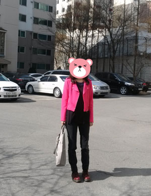
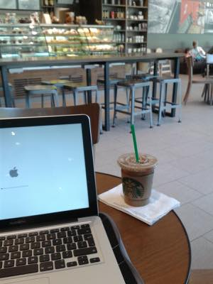
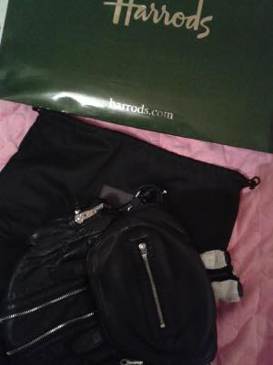
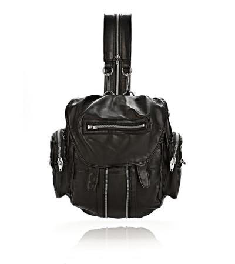
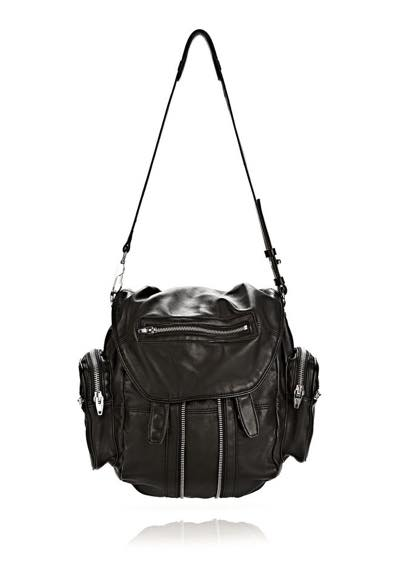
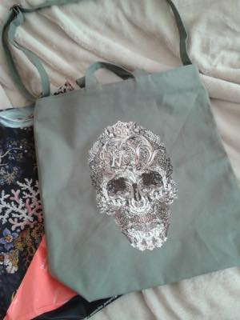
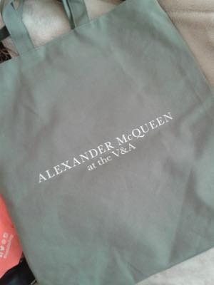
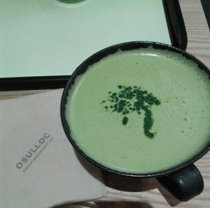
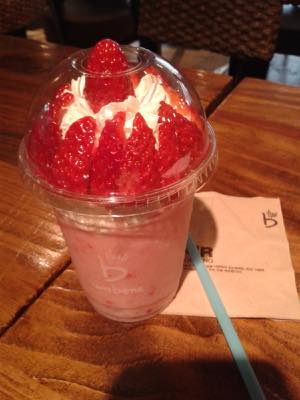

첫사진은 귀국기념(?)으로 개시한
ZARA 삥크 라이더 자켓 :)
가방은 V&A 알렉산더맥퀸전에서 구입한 에코백
신발은 닥터마틴 :)
한국입니당
이번엔 장기거주(?) 목적으로
일주일정도 시차때문에 겔겔거리다 겨우 정신차렸어요
집에서 삼시세끼 꼬박 엄마님밥 먹구 뒹굴었더니
지금 아쥬 뽀동뽀동합니다 :)
덕분에 3월달 미치게 바빴는데
그와중에 일만하다 귀국할수없다면서
신나게 돌아댕기고 질러대었더니 더 힘들었어요^^;;;;

우선 3월달에 여행은 가야것고
해야할일은 있고해서 ㅡㅡ;;
맥북프로 13인치 구입^^;;;
3박4일 일정 휴양지댕겨왔는데
오전에 2-3시간 일하고
오후에는 수영장가서 둥둥 떠있는 그런일정 이었습니다^^;;
노트북이랑 인터넷만 가능하면 어디서든 일이 가능하다는게
꽤나 매력적이었지만 동시에 놀러와서도 일을하다니 ㅜㅜ
이런 느낌도 드는 그런 경험이었달까용 ㅎㅎ
여행후기:

그리고 한쿡가는 기념(?)으로 드디어 정줄놓고 지른
알렉산더왕 마르티백팩 :D :D :D
Alexander Wang
Marti Backpack
사오자마자 급하게 찍은사진 한장^^
사진좀 제대로 찍어서
포스팅해야지 싶었는데 어쩌다보니 오늘까지 왔네용
스아실 오기전 M군에게 내 백팩 이쁘게 보이게
사진 찍어줘~라고 부탁했더니 이넘이
사진을 일케 찍어놓음 ㅜㅜ
예술혼 불태우지 말고 내가방을 찍어달란 말야아아 ㅜㅜ ㅜㅜ
그러므로 공홈사진을 가져옵니다 :D


헷헷 소원풀었으요
첨 봤을때 백팩/숄더 둘다 가능하다는거에 홀라당 넘어가서
우오오~ 2단변신가방!! 내취향!! 이러면서 꽤나 오래 이 가방 앓이를 했습니다^^
우히히 이제 내꺼~XD
그리고 요거 구입하면서 해롯카드를 만들었는데
할인프로모션 코드와 바우쳐 격하게 날아오는중
이제 돈없셔 이러지뫄......ㅋㅋㅋ


그리고 요건
V&A 뮤지엄 알렉산더맥퀸 전에서 구입한 캔버스가방
전시회 굿즈 잘 안사는 편인데
이건 숄더로 끈이 달려있어서 늠 좋더라구용
그나저나 맥퀸전시 어마무지한 인기 ㅡㅡ;;
온라인 티켓예매는 3월 제가 티켓구입한 시점에 이미 5월표까지
몽땅 솔드아웃 ㅡㅡ;;; 아침에 일찍가믄 당일 현장표는 구매가능합니다;;
티켓못구해서 이거 볼려고 두번이나 찾아갔다능;;
후기는 요기:


오설록 그린티라뗴와 카페베네 딸기스무디??
역시 카페 메뉴는 훨 다양한게 좋네용// 인터넷빨라서 기뻐하며 포풍포스팅
+
네이버 / 이글루 전부 블로그 주소를 바꿀까 싶다가
네이버는 주소변경이 불가능한걸 알고 이글루스도 다시 돌아가려했더니
일주일 기다려야하고 이틀정도 지난 오늘 옛날 내 주소로 이미 다른분이 블로그개설을 한걸 발견
크헉;; 이게 중복검사에 엔간해서 걸린적이 없는 그런거였는데;;OTL
해서 블로그 주소가 바뀌었습니다 ^^;;
날도 따닷해지고 수면패턴도 대충 정상으로 돌아왔겠다
여기저기 놀러다니고픈 의욕 충만합니당 :)